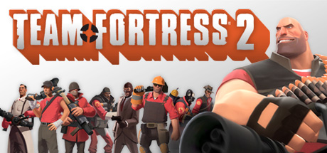
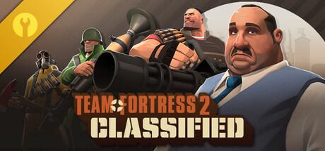

TF2 Linux x86 / x64 · Live UpdatesTeam Fortress 2
Живой каталог сигнатур и смещений движка и сервера (автоматическое обновление).

TF2C Архив · Linux x64 (21.08.2026)Team Fortress 2 Classified
Архивный снимок от 21.08.2026 (поддержка заморожена).
Список сигнатур
Для Classified доступны только сигнатуры Linux x64.
Поиск и фильтры
Результаты
Загрузка индекса…
Ничего не найдено
Попробуйте сократить запрос или изменить фильтры.
Всего офсетов
232 270
виртуальных методов
Классов C++
3 391
с виртуальными таблицами
Библиотеки
server / engine
сервер и движок Linux
Таблица VTable
Выберите класс или воспользуйтесь поиском
Загрузка данных VTable…
Сигнатур найдено
0
ELF / байт-паттерны
VTable офсетов
0
виртуальных методов
Классов C++
0
с совпадениями
Результаты
Введите запрос для поиска по всем данным…
Ничего не найдено
Попробуйте сократить запрос или изменить фильтры.